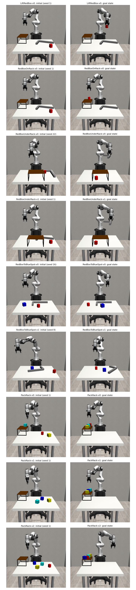

Can a coding agent write robot controllers from scratch?
Two coding agents, Codex · GPT-6-Astra and Claude Code · Opus 5.5, each got the same nine tabletop manipulation environments, a read-only copy of their code, a CPU-only container and one instruction: write Python code that solves them, without any training. Everything below — success rates, every iteration, the conversations, the code and 90 replayable episodes — comes from those two runs.
The benchmark: RoboEnvs
Nine tabletop manipulation tasks for a 7-joint Franka Panda arm with a parallel gripper, simulated in MuJoCo through robosuite. Each task is a goal on how the objects should end up — not a list of steps — and every reset draws a new random scene.
The scene
A table in front of the robot holds up to six objects: a rack (a 22 × 32 cm table-like frame, 16 cm tall, that boxes can sit on or slide under), an L-shaped stick (38 cm and 20 cm bars), and up to four boxes (red 5 cm, blue, yellow and cyan 7 cm). Object positions and orientations are random in every scene.
Reach
The arm's useful workspace is a half-disc in front of its base: objects within 0.75 m count as inside the workspace, objects at 0.85 m or more are beyond it (the buffer in between is never used for sampling). Several tasks deliberately start an object beyond reach.
Interface
reset(seed) → observation (two 84 px cameras + joint, gripper and end-effector
readings); get_state() → robot state and every object's exact pose; get_goal() → the
goal as text plus numeric targets; step(action) → a 7-number command: gripper pose (absolute, or a
move of up to 5 cm and 0.25 rad) and open/close, at 20 steps per second.
Success
Reward is 1.0 on the step all goal conditions hold, 0.0 otherwise — no partial credit, no shaping. Reaching the goal ends the episode; otherwise it is cut off at the task's time limit (50–125 s of simulated time).
Goal conditions
Goals combine a few checks: an object rests upright on another, lies under the rack (≥ 50% of its footprint), is held or raised, is within 15 cm of a position, has nothing on top and keeps clear of other objects, or is inside the workspace.
What makes it hard
Out-of-reach objects, a rack light enough to be knocked over, a goal position that is occupied at the start, a small rack that must fit three or four boxes, and an arm whose elbow and wrist run into joint limits near the edge of its reach — none of which the documentation spells out.
The nine tasks
Start and goal images are one example scene each (the goal image is one configuration that satisfies the goal). Scores: Codex on 20 seeds, Claude on 60 scenes.
All tasks at once: initial and goal states of every task.

The setup
Sandbox
A Docker container (Python 3.8, MuJoCo 2.3.7, robosuite 1.4.1, CPU rendering, 10 cores, no
GPU), running as a non-root user. The environments are baked in read-only at /opt/RoboEnvs;
/workspace is the only writable folder. Nothing else from the research code base is inside.
Rules
No training, learned models, reinforcement learning or GPU: plain Python. Solutions may only
use the public interface (reset, get_state, get_goal,
step, the spaces); reading the source is allowed, calling private members or the simulator is
not. Both agents chose to control from get_state() (exact object poses), not from images.
Agents
Codex CLI 0.159.2, GPT-6-Astra, medium effort,
--dangerously-bypass-approvals-and-sandbox --no-daemon, given the task with /goal.
Claude Code 2.1.285, Opus 5.5, medium effort,
--dangerously-skip-permissions, given the task as one message. Codex ran first; its files and
conversation were removed from the container before Claude started.
The prompt
The task, as one prompt (also in prompts/PROMPT.md, ready to give to any agent):
Show the prompt
How each agent actually received it
The content is the same; the delivery differed. Codex got the core task as a /goal
and three follow-ups typed during its run (code per environment, videos of 5 random seeds, the compact
iteration report). Claude got everything in one message, with the iteration report included from the start
and its own sub-folder /workspace/claude/.
Codex
Claude Code
Results
Success = the episode ends with terminated=True (goal reached) before the time limit. Codex
evaluated 20 seeds per environment; Claude evaluated 60 distinct scenes per environment, 20 of which it had
never run before the final cycle.
Getting there: success over the run
Every evaluation each agent ran, at the time it finished. Hover for details; click a point to open that iteration below. Runs differ in how many episodes they cover (shown as point size).
Video explorer
All 90 recorded episodes (5 per task and agent). Each was replayed with state logging — the replays reproduce every recorded episode step for step — so the map and charts beside the video show exactly what happens in it. Pick a task and seed, scrub, slow down, or jump to an event.
Iterations: what each agent observed and changed
Each step is one evaluation run the agent made. "Observed" is the agent's own narration written since the previous run; "changed" is the agent's summary (Claude's REPORT.md) or its saved code snapshot (Codex), with the actual code diff where a snapshot exists.
Claude's own summary (REPORT.md)
Codex's own summary (final message)
Conversation logs
The prompts, the agents' own narration, and every command they ran (outputs omitted). Times are minutes since the agent started.
The code
Every file of each agent's final solution. One command runs a task, e.g. python solutions/PackRack-v2.py --seed 1.
Caveats
- Privileged state. Both agents control from
get_state(), the simulator's exact object poses, not from camera images. These are state-based controllers. - Different evaluation sizes. Codex: 20 seeds per environment. Claude: 60 distinct scenes, of which seeds 41–60 were held out until cycle 10 (178/180 there; the two BlueSpot failures were then fixed and those two environments re-run).
- Seeds.
reset(seed)skips seeds whose scene is invalid, and which seeds are skipped can depend on what the same environment instance did before. Claude evaluated only seeds that a fresh environment maps to themselves; Codex used seeds 0, 1000, …, 19000. A fresh process reproduces each scene. - Free episode. One RedBoxToBlueSpot-v0 scene already satisfies its goal at reset (the red box starts within 0.15 m of the blue box's start): success at step 1. It appears in both agents' videos.
- Self-reported runs, independently replayed videos. The success tables are the agents' own evaluations (checked against their raw result files). The 90 video episodes were re-run for this page and matched the recordings exactly.
- A process mistake. During the Codex run a second, unintended Codex process also wrote to
/workspacefor its first ~1.7 hours before it was stopped; its intermediate files may be mixed into Codex's development folder. The final evaluation ran after it stopped.